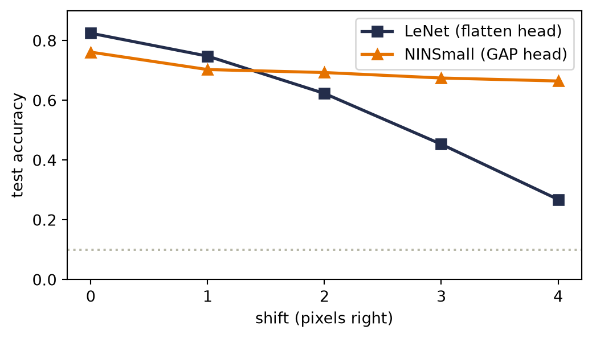
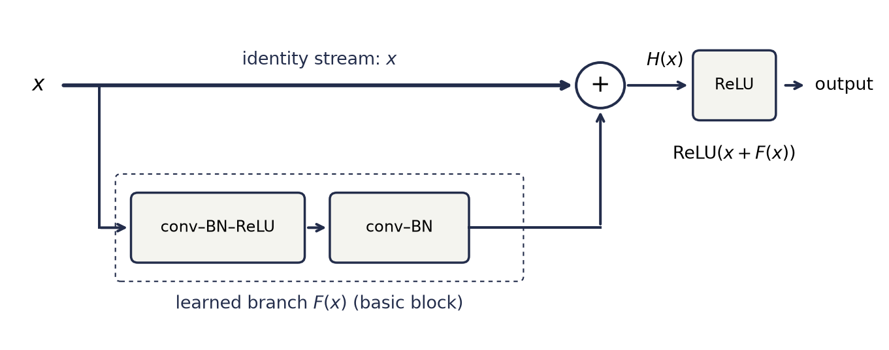
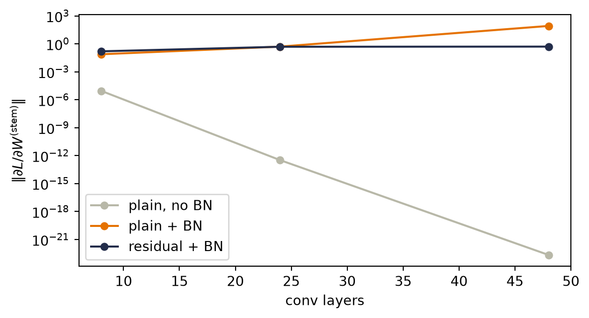
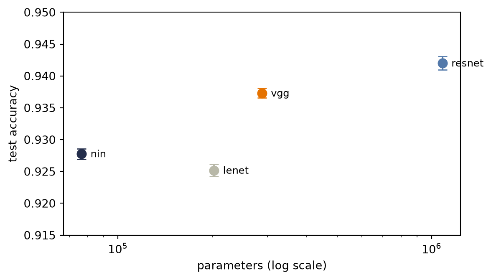
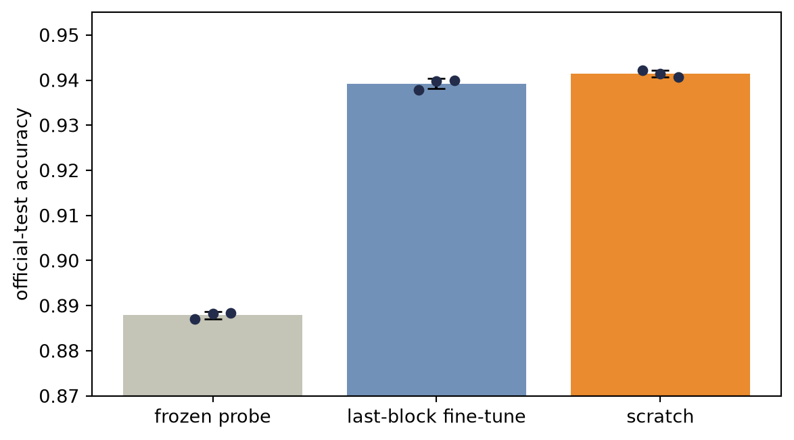

import torch
import torch.nn as nn
import torch.nn.functional as F
import matplotlib.pyplot as plt
from collections.abc import Callable
torch.set_num_threads(4) # pinned: results depend on the CPU thread count
# [1]
torch.manual_seed(6050)
train = torch.load("../../data/fashion-train.pt")
test = torch.load("../../data/fashion-test.pt")
X_tr = train["X"].float().unsqueeze(1) / 255.0 # (1200, 1, 28, 28)
X_te = test["X"].float().unsqueeze(1) / 255.0 # (600, 1, 28, 28)
y_tr, y_te, classes = train["y"], test["y"], train["classes"]
# [2]
def train_existing(
model: nn.Module, opt: torch.optim.Optimizer, epochs: int,
batch: int = 128,
data: tuple[torch.Tensor, torch.Tensor] | None = None,
) -> nn.Module:
X, y = data if data is not None else (X_tr, y_tr)
n = len(X)
for _ in range(epochs):
perm = torch.randperm(n)
for i in range(0, n, batch):
idx = perm[i:i + batch]
model.train()
loss = F.cross_entropy(model(X[idx]), y[idx])
opt.zero_grad(); loss.backward(); opt.step()
model.eval()
return model
def train_model(model_fn: Callable[[], nn.Module], epochs: int,
batch: int = 128, seed: int = 6050, lr: float = 1e-3,
data: tuple[torch.Tensor, torch.Tensor] | None = None) -> nn.Module:
torch.manual_seed(seed)
model = model_fn()
opt = torch.optim.Adam(model.parameters(), lr=lr)
return train_existing(model, opt, epochs, batch, data)
# [3]
@torch.no_grad()
def accuracy(model: nn.Module, X: torch.Tensor, y: torch.Tensor) -> float:
model.eval()
return (model(X).argmax(1) == y).float().mean().item()
def count(model: nn.Module) -> int:
return sum(p.numel() for p in model.parameters())10 Modern CNNs and Transfer Learning
Chapter 9 ended with a working machine and a report card. LeNet reads garments at 82.5% with 61,706 parameters; graceful under shift where the MLP cliff-dived. But the card has two demerits we wrote down explicitly: 96% of those parameters sit in the dense head rather than in the convolutions that do the seeing, and the shift cliff was softened, not abolished. And one IOU: batch normalization, promised for this chapter.
What happened after LeNet is a decade of architecture research, and it can drown you in named networks. Four design questions will keep the mechanism visible; we let them drive:
- Why \(5 \times 5\)? Could smaller filters do the same job with fewer parameters?
- How do we go deeper without gradients dying on the way down?
- Where do the parameters actually live, and how do we evict them?
- Can we design reusable blocks: optimized layer combinations we stack, keeping a bird’s-eye view instead of re-designing what already works?
Each question has a famous answer (VGG, ResNet, NiN’s \(1\times1\) + global pooling, and the block habit itself), and each answer is a constraint-shaped idea we can test on our own data. At the end, the practical superpower this sequence builds to, reusing a pretrained backbone, gets the most honest experiment in this book.
![A diagram with one row per block design and three columns: compose a block, repeat it, add a head. VGG-style row: a 3-by-3 convolution, batch normalization, and ReLU, heavily outlined as a unit and applied twice, then 2-by-2 max pooling; the block repeats twice, with 16 and then 32 channels; the head is flatten, linear 1568 to 128, ReLU, linear 128 to 10. NiN row: a 3-by-3 convolution, batch normalization, and ReLU, then two heavily outlined 1-by-1 convolutions, each followed by ReLU; the block repeats three times, with 16, 32, and 64 channels and max pooling between; the head is a heavily outlined global average pooling, then flatten and linear 64 to 10. Residual row: a 3-by-3 convolution, batch normalization, ReLU, a second 3-by-3 convolution, and batch normalization lead into a heavily outlined sum; a heavily outlined identity route carries the block input forward, above the branch, into the same sum, and a ReLU follows; the block repeats twenty times with 12 channels, after a convolution stem and max pooling; the head is global average pooling, flatten, and linear 12 to 10.](../../figures/generated/cnn-building-blocks.svg)
Read each row from left to right whenever a named architecture becomes noisy. First find the operators inside the block, then count how often the block repeats, then read the head. The sections that follow take the rows in order, and each heavy outline marks what its row adds.
Both trainers below are Listing 4.1 with one factoring: the inner loop (train_existing) accepts a model and optimizer that already exist, because this chapter’s whole subject is training models it did not just construct: fresh heads on frozen trunks, and selectively thawed layers at their own learning rates.
- Load imports, data, and the shared training recipe.
- Define the reusable helpers:
train_existingandtrain_model. - Define the reusable helpers:
accuracyandcount.
Chapter 9 already opened the 600-image holdout, and this chapter queries it repeatedly while comparing architectures, so we keep the familiar X_te name but treat it as the book’s fixed benchmark. These comparisons are descriptive, not an unbiased estimate after model selection; a final claim would require a fresh, untouched test set.
The recipe has two small novelties, both because this chapter’s networks contain batch normalization: model.train() before each step and model.eval() before each evaluation. Why that matters is the subject of the second section.
10.1 Question 1: why \(5 \times 5\)? Stack small kernels instead
VGG (Simonyan & Zisserman, 2014) answers with a rule: never use a \(5 \times 5\) kernel; stack \(3 \times 3\)s until the field is as wide as you need. Recall from Chapter 9 that stacking grows the receptive field. Two stacked \(3 \times 3\) convolutions let the second layer see \(5 \times 5\) of the input, the same receptive field as one \(5 \times 5\) kernel. But compare the parameter counts, for a layer with \(C\) channels in and \(C\) out:
\[ \underbrace{25\,C^2}_{\text{one } 5\times5} \qquad\text{versus}\qquad \underbrace{2 \times 9\,C^2 = 18\,C^2}_{\text{two } 3\times3\text{s}}, \]
a 28% saving. The stacked pair also fires a ReLU twice where the big kernel fires once. Same sight, fewer parameters, more nonlinearity. Three \(3\times3\)s reach a \(7\times7\) field for \(27C^2\) against \(49C^2\): the deeper you take the idea, the larger the saving.
Watch the mechanism: two 3 × 3s see what one 5 × 5 sees
Two 3 × 3 convolutions are stacked. How much of the input can one output of the second layer see, and what does that sight cost against a single kernel?
One output pixel, traced back through the stack; then the same pixel under one 5 × 5 kernel, and the two weight bills side by side.
\( \class{sgt-field}{\text{field} = 1 + \textstyle\sum_{\ell} (k_\ell - 1)} \)\( \class{sgt-bill}{\text{weights} = C^2 \textstyle\sum_{\ell} \parameterpart{k_\ell^2}} \)
Same sight, fewer parameters, more nonlinearity.
The calculation is readable without playback. Opening this panel loads the optional controls.
Equal sight is about which input pixels can reach an output, not about computing the same function: a 5 × 5 kernel and two 3 × 3s with a ReLU between them are different maps.
Scope and caveats
The grids are a 7 × 7 crop around one output pixel; with padding 1 or 2 every map keeps its size, as in the cell. The totals are the cell's printed counts at C = 32, biases included: 25,632 for one 5 × 5 and 18,496 for two 3 × 3s.
The saving assumes the width stays C through the stack, the caveat the chapter adds under the cell: a layer that grows its channels can cost more when split.
Blue marks the input pixels an output can see, green the maps the layers compute, and orange the weights; windows and arrows are neutral ink.
Check yourself. A 3 × 3 convolution followed by a 5 × 5: how wide a patch does one output see, and how many weights per channel pair against the single kernel that sees as far?
7 × 7: each layer adds its kernel's width minus one, so 3 + 4 = 7. The pair holds 9 + 25 = 34 weights per channel pair against 49 for one 7 × 7 kernel.
Transcript and keyboard help
- Two 3 by 3 convolutions stacked: input, hidden map, output. One output pixel is marked. How much of the input can it see?
- The second convolution reads a 3 by 3 window of the hidden map around that pixel.
- Each of those nine hidden pixels read its own 3 by 3 window of the input. Their windows together cover 5 by 5: three plus two more.
- One 5 by 5 kernel reads exactly the same 5 by 5 patch in a single step. Same sight.
- Predict. Per pair of input and output channels, which holds fewer weights: one 5 by 5 kernel or two 3 by 3 kernels?
- Two 3 by 3 kernels hold 9 plus 9, 18 weights; one 5 by 5 holds 25.
- At 32 channels in and out, with biases, that is 18,496 parameters against 25,632, the counts the cell below prints: 28 percent fewer weights.
- The stack also applies a ReLU twice where the single kernel applies it once. Same sight, fewer parameters, more nonlinearity.
Silent; paused initially; 1.5× playback. Focus the animation pane: Space or K plays/pauses, arrows seek between beats, Home/End jump, Escape pauses. The scrubber and speed menu also work by keyboard. Reduced-motion mode holds each beat's finished state instead of moving between them.
- Set
C = 32and buildone_5x5, one 5×5 convolution, andtwo_3x3, two 3×3s with a ReLU between. - Count both designs’ parameters at C = 32.
# [1]
C = 32
one_5x5 = nn.Conv2d(C, C, 5, padding=2)
two_3x3 = nn.Sequential(nn.Conv2d(C, C, 3, padding=1), nn.ReLU(),
nn.Conv2d(C, C, 3, padding=1))
# [2]
print(f"one 5x5: {count(one_5x5):,} parameters, 1 ReLU after")
print(f"two 3x3s: {count(two_3x3):,} parameters, 2 ReLUs")one 5x5: 25,632 parameters, 1 ReLU after
two 3x3s: 18,496 parameters, 2 ReLUsThe \(18C^2 < 25C^2\) arithmetic assumes the channel width stays \(C\) through the stack. When a layer grows channels (as LeNet’s \(6 \rightarrow 16\) did), splitting it into two growing \(3\times3\)s can cost more, not less. VGG’s design sidesteps this by keeping width constant inside each block and changing it only between blocks, which is exactly the shape our code will take. (Exercise 1 makes you find the break-even point.)
10.2 The stabilizer we owe you: batch normalization
Before we stack deeper than ever, we need the tool Chapter 9 used and we deferred. Here is the problem it solves. Watch what happens to the scale of activations as a signal crosses twelve freshly initialized \(3\times3\) conv layers:
- Define the reusable
stack12helper. - Fix seed 0, take 256 garments as
x, buildplain_stackandbn_stack, and list their conv layers. - Activation scale through 12 conv layers, with and without BN.
- Pass
xthrough both stacks and print the activation std after every other conv layer.
# [1]
def stack12(with_bn: bool, ch: int = 16) -> nn.Sequential:
layers = [nn.Conv2d(1, ch, 3, padding=1)]
for _ in range(11):
if with_bn:
layers.append(nn.BatchNorm2d(ch))
layers += [nn.ReLU(), nn.Conv2d(ch, ch, 3, padding=1)]
return nn.Sequential(*layers)
# [2]
torch.manual_seed(0)
x = X_tr[:256]
plain_stack = stack12(False)
bn_stack = stack12(True)
plain_convs = [m for m in plain_stack if isinstance(m, nn.Conv2d)]
bn_convs = [m for m in bn_stack if isinstance(m, nn.Conv2d)]
# [3]
for source, target in zip(plain_convs, bn_convs):
target.load_state_dict(source.state_dict()) # identical convolution weights
# [4]
for tag, network in [("without BN", plain_stack), ("with BN ", bn_stack)]:
h, stds = x, []
with torch.no_grad():
for layer in network:
h = layer(h)
if isinstance(layer, nn.Conv2d):
stds.append(h.std().item())
print(f"{tag} layer stds: " + " ".join(f"{s:.3f}" for s in stds[::2]))without BN layer stds: 0.344 0.059 0.043 0.046 0.049 0.061
with BN layer stds: 0.344 0.404 0.395 0.385 0.432 0.384Without normalization the signal’s spread collapses by an order of magnitude within a few layers and never recovers: every printed layer after the first stays between 0.043 and 0.061. Forward activation scales and backward gradients are not the same quantity, but both are shaped by the stack’s weights and nonlinearities; poorly scaled activations are therefore a warning to inspect gradient flow directly, as we do below.
Batch normalization (Ioffe & Szegedy, 2015) re-standardizes at every layer. For each channel of an NCHW tensor, BatchNorm2d computes the mean and variance across the current minibatch and both spatial axes (\(N\), \(H\), and \(W\)), normalizes the activations, then lets the layer undo that transformation through two learnable knobs:
\[ \hat{x} = \frac{x - \mu_{\text{batch}}}{\sqrt{\sigma^2_{\text{batch}} + \epsilon}}, \qquad y = \gamma\,\hat{x} + \beta . \tag{10.1}\]
The \(\gamma, \beta\) pair matters: normalization is a reset to a healthy scale, not a straitjacket. The network can learn to restore any mean and spread that helps, but it starts every layer from sane numbers. In the printout above, the BN row holds a near-constant spread at every printed depth: the signal reaches each layer at a usable scale from the first step. The standard placement we adopt is conv \(\rightarrow\) BN \(\rightarrow\) ReLU, with bias=False on the convolution, since \(\beta\) already provides the shift.
Watch the mechanism: one garment, two batches, two modes
In training mode, the same garment goes through BatchNorm twice, once with each of two batches of other garments. Its own value is 2 both times. Does its output change?
One channel, one number per garment. Under the four values sits the ruler BatchNorm measures with: its zero at the batch mean, one tick per spread.
\( \displaystyle \hat{x} = \frac{x - \class{br-mu}{\mu_{\text{batch}}}}{\class{br-sigma}{\sqrt{\sigma^2_{\text{batch}} + \epsilon}}}, \quad y = \parameterpart{\gamma}\,\hat{x} + \parameterpart{\beta} \)
Two machines: training measures with the batch, evaluation with stored statistics.
The calculation is readable without playback. Opening this panel loads the optional controls.
Each garment is one number here; BatchNorm2d pools every pixel of the channel as well, and the running statistics are declared, not trained.
Scope and caveats
The four values are an illustrative toy: one channel, one number per garment, yours at 2 and its batch-mates at 0, 0 and 2, then at 2, 4 and 4. The spread is the square root of the variance, the mean of the squared deviations over the batch, as the formula computes it.
ε is taken as 0. At PyTorch's default, ε = 10⁻⁵, each reading moves by less than 10⁻⁵, so no drawn digit changes.
γ = 1 and β = 0, the values a freshly built layer starts from, so the output y is the reading itself.
The running statistics stand in for the running averages collected during training: here they are declared as the two batches' averages, mean 2 and variance 1. PyTorch's own are momentum-weighted and track the unbiased variance, so a trained layer would hold other values.
In this one-number toy, a batch of one garment would leave no spread to measure: the extreme case of why BatchNorm needs real batches and gets unreliable at tiny batch sizes.
Blue marks the values, your garment's ring and its reading; ink marks the rulers, the mean mark and the drop, the running ruler dashed and the first batch's ruler, drawn again for comparison, dotted; orange marks γ and β in the formula.
Check yourself. In training mode, every value in the first batch doubles, your garment's included: 4, 0, 0 and 4. What does BatchNorm output for your garment?
Still 1. The mean doubles to 2 and the spread to 2, so the garment reads (4 − 2)/2 = 1: in training mode a rescaling shared by the whole batch cancels out.
Transcript and keyboard help
- Training mode. One channel, one number per garment: your garment, ringed, holds 2, and its three batch-mates hold 0, 0 and 2. The batch's mean is 1 and its spread 1, so the batch ruler under the axis puts its 0 at 1, one tick per unit. A drop from your garment meets the ruler at 1: it reads (2 − 1)/1 = 1.
- Predict. The other three garments are about to be swapped for larger ones while yours stays at 2. Does your garment's output change?
- The three batch-mates glide to 2, 4 and 4. Then the batch's mean slides to 3, the spread stays 1, and the ruler slides after them. Your garment has not moved, but the ruler's −1 now sits under it: it reads (2 − 3)/1 = −1.
- Same input, opposite outputs. The first batch's ruler is drawn again below the second's, and the same drop meets it at 1: 1 in the first batch, −1 in the second. In training mode the output depends on the batch.
- Evaluation mode. The batch ruler fades and a dashed running ruler takes its place, built from running statistics collected during training: mean 2, spread 1. Your garment reads (2 − 2)/1 = 0.
- The batch-mates glide back to 0, 0 and 2. The running ruler stays put, and the reading stays 0.
- They glide to 2, 4 and 4 again. The reading is still 0: in evaluation mode the output depends on the input alone.
- Two machines: training mode measures each value with the current batch's mean and spread, evaluation mode with stored running statistics. The final frame shows evaluation mode, the running ruler and the reading 0.
Silent; paused initially; 1.5× playback. Focus the animation pane: Space or K plays/pauses, arrows seek between beats, Home/End jump, Escape pauses. The scrubber and speed menu also work by keyboard. Reduced-motion mode holds each beat's finished state instead of moving between them.
WarningBN is two different machines: tell PyTorch which one you are running
At training time BN normalizes by the current batch’s statistics. At evaluation time there may be no batch (one image), so it uses running averages collected during training. model.train() and model.eval() switch between the two. Forgetting the switch is the classic BN bug: evaluate in train mode and your predictions depend on whatever else happens to be in the batch; train in eval mode and BN never learns its statistics. Our train_model recipe flips the switch in both directions; look for it. It follows that BN needs real batches to estimate statistics, so it gets unreliable at tiny batch sizes.
NoteNormalize across what? A seed for Part IV
Batch statistics are one choice among several. When we build transformers (Chapter 16), batches of variable-length sequences will make per-batch statistics awkward, and the same standardize-then-rescale idea will reappear computed per token instead: layer normalization. Same equation, different axis. Remember Equation 10.1 when you meet it.
10.3 Building with blocks: a small VGG
Now assemble Question 1’s answer with Question 4’s habit. Define the atom (conv, BN, ReLU) once; a block stacks atoms and pools; a network stacks blocks. This is the point about VGG versus its hand-tuned predecessors: you stop re-designing and start repeating.
- Define the reusable helpers:
atomandVGGSmall. - VGGSmall: two blocks of stacked 3×3 atoms.
- Print total and head parameter counts for
VGGSmall, the head’s share, and test accuracy.
# [1]
def atom(c_in: int, c_out: int) -> list[nn.Module]:
return [nn.Conv2d(c_in, c_out, 3, padding=1, bias=False),
nn.BatchNorm2d(c_out), nn.ReLU()]
class VGGSmall(nn.Module):
def __init__(self):
super().__init__()
self.features = nn.Sequential(
*atom(1, 16), *atom(16, 16), nn.MaxPool2d(2), # -> (16, 14, 14)
*atom(16, 32), *atom(32, 32), nn.MaxPool2d(2), # -> (32, 7, 7)
)
self.head = nn.Sequential(nn.Flatten(),
nn.Linear(32 * 7 * 7, 128), nn.ReLU(),
nn.Linear(128, 10))
def forward(self, x: torch.Tensor) -> torch.Tensor:
return self.head(self.features(x))
# [2]
vgg = train_model(VGGSmall, epochs=60)
n_head = count(vgg.head)
# [3]
print(f"VGGSmall: {count(vgg):,} parameters ({n_head:,} in the head, "
f"{n_head / count(vgg):.0%})")
print(f"test accuracy {accuracy(vgg, X_te, y_te):.1%}")VGGSmall: 218,586 parameters (202,122 in the head, 92%)
test accuracy 86.7%Two readings again. On the good side, this VGG-style recipe reaches 86.7%, four points above LeNet in this run. Because depth, width, normalization, kernel sizes, parameter count, and training duration all changed together, this comparison does not isolate which ingredient earned the gain. On the bad side, it carries 218,586 parameters, three and a half times LeNet’s total, and the head’s share got worse: 92% of the network is a dense layer reading a flattened grid. The convolutional diet succeeded and the total got fatter anyway. Which forces the third question: where do the parameters live, and where can we do the most damage to the count?
10.4 Question 3: \(1 \times 1\) convolutions, and firing the flatten head
The bloat has one address: nn.Linear(1568, 128). To evict it we need one more tool, odd-looking at first sight: a convolution whose kernel is \(1 \times 1\).
A \(1 \times 1\) kernel does no spatial mixing at all: it looks at a single pixel. But across channels it does exactly what Equation 9.1 says: at each position, take the \(C_{\text{in}}\) channel values and form \(C_{\text{out}}\) weighted combinations plus bias. Pause on what that is: a linear model across the channels, run separately at every pixel, Chapter 1’s machine, miniaturized and stamped across the image. Add a ReLU and each pixel is running a tiny MLP over its own feature vector. We summarize channels, we do not discard them: compressing 64 feature maps into 32 loses far less than pooling them away, and each compression injects another nonlinearity almost for free.
Watch the mechanism: a 1 × 1 convolution is one linear layer, run at every pixel
nn.Conv2d(16, 16, 1) slides a kernel one pixel wide over a 16-channel, 28 × 28 map. Is it a no-op? How many weights does it hold, and does each pixel get its own?
NINSmall, below, runs this exact layer twice in its first block. Follow one pixel's column of channel values through it.
=
\( \predictionpart{y}_{\class{sk-ij}{i,j}} = \operatorname{ReLU}\bigl(\class{sk-w}{\parameterpart{W}}\,\class{sk-in}{\featurepart{x}_{\class{sk-ij}{i,j}}} + \class{sk-w}{\parameterpart{b}}\bigr) \)\( \class{sk-shape}{\parameterpart{W} \in \R^{C_{\text{out}} \times C_{\text{in}}}}, \quad \text{the same at every } (i,j) \)
A 1 × 1 convolution is one linear layer across channels, run with the same weights at every pixel.
The calculation is readable without playback. Opening this panel loads the optional controls.
The channel values and weights drawn here are illustrative: the chapter's network learns its own weights, and only the shapes and the counts are NINSmall's.
Scope and caveats
The shapes are NINSmall's. Its first block, nin_block(1, 16), turns a 28 × 28 garment into 16 maps with a 3 × 3 convolution, batch normalization and ReLU, then runs nn.Conv2d(16, 16, 1) and a ReLU twice. The chapter trains those weights and prints none of them, so the two columns, the weights and the biases here are made up, in halves between −1 and 2, and every output is computed from them exactly.
The identity is exact, not a metaphor. nn.Conv2d(C_in, C_out, 1) holds a weight tensor of shape Cout × Cin × 1 × 1, and at every pixel it computes what nn.Linear(C_in, C_out) computes on that pixel's channel vector: one set of weights, shared by all 784 pixels. Its bill, Cout × Cin + Cout, never mentions the map's height or width.
Chapter 9's corner detector read both of its detectives across a 5 × 5 neighbourhood. A 1 × 1 layer keeps that cross-talk between channels and drops the neighbourhood; finding spatial patterns stays with the 3 × 3 before it. The same count is where the Inception bottleneck later in this chapter gets its savings: a 1 × 1 squeezes the channels before an expensive 5 × 5 reads them.
In the weight grid a filled square is a positive weight and a hollow one a negative weight, its area proportional to the size; an open ring is an output of exactly zero after the ReLU. The skewer and the dial are neutral ink: how many output channels to make is a design choice, not a learned parameter.
Check yourself. A sequence carries 64 numbers at every time step. How many parameters does nn.Conv1d(64, 32, kernel_size=1) hold, and what does it do at each step?
2,080: a 32 × 64 weight matrix and 32 biases, whatever the length of the sequence. At every time step it applies the same nn.Linear(64, 32) to that step's 64 numbers. It is this chapter's 64 feature maps compressed into 32, run along time instead of across an image, and it is how Chapter 16's position-wise feedforward network treats every token.
Transcript and keyboard help
- One pixel, one channel. A 1 by 1 kernel sits on a single pixel of a 28 by 28 map. With one channel, all it can do is scale that pixel and add a bias: nearly a no-op.
- Sixteen deep. The map has 16 channels, so under the pixel lies a column of 16 numbers, one per channel. The column is lifted out and laid flat.
- Predict. Sixteen numbers in, sixteen out. How many weights does the layer need, and does every pixel get weights of its own?
- One pixel, one linear layer. The weights appear: a grid W of 16 rows and 16 columns, and 16 biases. Each row mixes all 16 channel values into one output, a ReLU turns the negative ones into zero, and the 16 outputs are written into the output at the same pixel.
- Another pixel. The skewer moves along the row. A different column passes through the very same W and is written at its own pixel. The layer holds 16 times 16 plus 16, 272 parameters, and every pixel shares them.
- Every pixel. The skewer visits all 784 pixels with the same W. The output is 16 by 28 by 28: height and width pass through untouched.
- Depth is a choice. The number of output channels sets how many rows W has: 4 channels squeeze the depth for 68 parameters, 32 expand it for 544. The map stays 28 by 28.
- A 1 by 1 convolution is one linear layer across channels, run with the same weights at every pixel. The dial tries another output depth.
Silent; paused initially; 1.5× playback. Focus the animation pane: Space or K plays/pauses, arrows seek between beats, Home/End jump, Escape pauses. The scrubber and speed menu also work by keyboard. The output-channel dial pauses playback and redraws the whole picture for the depth you choose; playing or scrubbing returns to the timeline. Reduced-motion mode holds each beat's finished state instead of moving between them.
That tool enables the Network-in-Network design (Lin et al., 2013), and with it the clean head. A NiN block is one \(3\times3\) (some spatial mixing) followed by two \(1\times1\)s (per-pixel channel mixing). And the classifier becomes:
- Let the last block produce a stack of feature maps.
- Global average pooling (GAP): average each map over all positions: 64 maps in, 64 numbers out. No parameters at all.
- One small linear layer to the logits.
- Define the reusable helpers:
nin_blockandNINSmall. - Fix seed 6050, build
NINSmall, and give it an Adam optimizernin_optat learning rate 1e-3. - NINSmall: architecture and first 75 epochs.
# [1]
def nin_block(c_in: int, c_out: int) -> list[nn.Module]:
return [nn.Conv2d(c_in, c_out, 3, padding=1, bias=False),
nn.BatchNorm2d(c_out), nn.ReLU(),
nn.Conv2d(c_out, c_out, 1), nn.ReLU(),
nn.Conv2d(c_out, c_out, 1), nn.ReLU()]
class NINSmall(nn.Module):
def __init__(self):
super().__init__()
self.features = nn.Sequential(
*nin_block(1, 16), nn.MaxPool2d(2),
*nin_block(16, 32), nn.MaxPool2d(2),
*nin_block(32, 64),
)
self.head = nn.Sequential(nn.AdaptiveAvgPool2d(1), nn.Flatten(),
nn.Linear(64, 10))
def forward(self, x: torch.Tensor) -> torch.Tensor:
return self.head(self.features(x))
# [2]
torch.manual_seed(6050)
nin = NINSmall()
nin_opt = torch.optim.Adam(nin.parameters(), lr=1e-3)
# [3]
nin = train_existing(nin, nin_opt, epochs=75)- NINSmall: continue the same optimizer through epoch 150.
- Print the total and head parameter counts of
NINSmalland its test accuracy.
# [1]
nin = train_existing(nin, nin_opt, epochs=75)
# [2]
print(f"NINSmall: {count(nin):,} parameters "
f"(head: {count(nin.head):,})")
print(f"test accuracy {accuracy(nin, X_te, y_te):.1%}")NINSmall: 35,034 parameters (head: 650)
test accuracy 76.2%The parameter story is a rout: 35,034 total, a 650-parameter head, six times smaller than VGGSmall. The accuracy is 76.2%, and that dip is worth more attention than the win. First, though, check the promised benefit. Chapter 9 said the remaining shift-cliff was the flatten head’s fault: it reads the final grid positionally. GAP averages over positions, so the head no longer assigns a different weight to every location. What remains is Chapter 2’s classification head in its plainest form: one linear layer reading one averaged number per channel. The rematch of the rematch:
- Define the reusable helpers:
LeNetandshift_right. - Shift curves, flatten head vs GAP head.
- Print per-shift test accuracy for
LeNetandNINSmall; plot both curves with a dotted line at 0.1.
# [1]
class LeNet(nn.Module):
def __init__(self):
super().__init__()
self.conv1 = nn.Conv2d(1, 6, 5, padding=2)
self.conv2 = nn.Conv2d(6, 16, 5)
self.fc1 = nn.Linear(400, 120)
self.fc2 = nn.Linear(120, 84)
self.fc3 = nn.Linear(84, 10)
def forward(self, x: torch.Tensor) -> torch.Tensor:
x = F.max_pool2d(F.relu(self.conv1(x)), 2)
x = F.max_pool2d(F.relu(self.conv2(x)), 2)
x = x.flatten(1)
x = F.relu(self.fc1(x))
x = F.relu(self.fc2(x))
return self.fc3(x)
# [2]
lenet = train_model(LeNet, epochs=150) # Chapter 9's model, same recipe
def shift_right(X: torch.Tensor, px: int) -> torch.Tensor:
if px == 0:
return X.clone()
out = torch.zeros_like(X)
out[..., px:] = X[..., :-px]
return out
shifts = list(range(5))
acc_lenet = [accuracy(lenet, shift_right(X_te, s), y_te) for s in shifts]
acc_nin = [accuracy(nin, shift_right(X_te, s), y_te) for s in shifts]
# [3]
for s in shifts:
print(f"shift {s}px: LeNet {acc_lenet[s]:.1%} NIN+GAP {acc_nin[s]:.1%}")
plt.figure(figsize=(5.5, 3.2))
plt.plot(
shifts, acc_lenet, "s-", color="#232D4B", lw=2, ms=7,
label="LeNet (flatten head)",
)
plt.plot(
shifts, acc_nin, "^-", color="#E57200", lw=2, ms=7,
label="NINSmall (GAP head)",
)
plt.axhline(0.1, ls=":", color="#B8B8A8")
plt.xlabel("shift (pixels right)"); plt.ylabel("test accuracy")
plt.ylim(0, 0.9); plt.xticks(shifts); plt.legend()
plt.tight_layout(); plt.show()shift 0px: LeNet 82.5% NIN+GAP 76.2%
shift 1px: LeNet 74.8% NIN+GAP 70.3%
shift 2px: LeNet 62.3% NIN+GAP 69.3%
shift 3px: LeNet 45.3% NIN+GAP 67.5%
shift 4px: LeNet 26.8% NIN+GAP 66.5%
The curve that fell from 82% to 27% across this book’s Part II is now a gentle slope from 76% to 67%. Position-specific weights are gone from NINSmall’s head, and the result is consistent with the promised robustness benefit. It is not a matched-head ablation: the trunks and training recipes differ too. The complete CNN is only approximately shift-tolerant; boundaries, strides, and pooling can still change its features.
Now the dip. On clean, centered test garments NINSmall trails LeNet by six points. That result is consistent with Chapter 9’s warning: on centered data, position can carry information, and a GAP head cannot assign separate weights to separate locations. But GAP is not the only changed ingredient, so this run does not prove it caused the gap. On the full 60,000-image dataset, the book’s pinned Rivanna runs put NiN at \(92.78\% \pm 0.08\%\) across seeds 6050–6052. At our scale the comparison exposes a hypothesis worth testing with a matched-head ablation: shift tolerance may be bought with positional information.
NoteQuestion 4’s other famous block: Inception, in one breath
GoogLeNet’s Inception block (2014) answers “which kernel size?” with “all of them”: parallel \(1\times1\), \(3\times3\), \(5\times5\), and pooling branches, concatenated. Its enabling trick is the \(1\times1\) bottleneck: compress channels before the expensive spatial kernels. For one \(5\times5\) branch at 256 channels: direct, \(5^2 \times 256 \times 128 \approx 819\)k parameters; with a \(1\times1\) squeeze to 32 first, \(256 \times 32 + 5^2 \times 32 \times 128 \approx 111\)k, an 86% cut for the same nominal operation. We will not build Inception here (the principle, channel compression before spatial expense, is the transferable part), but Exercise 2 walks the arithmetic.
10.5 Question 2: going deeper, and the wall you hit
VGG says depth is the direction. So push it: stack twenty of our two-conv blocks (with BN, per the recipe, on a \(14\times14\) grid so the experiment fits a laptop) and compare against the identical stack with one change we will reveal after the numbers.
Predict before running. Two networks have identical parameter counts and twenty blocks each; one is plain, one residual. Will the plain net merely trail, or fail to fit the training set at all?
- Define the reusable helpers:
BlockandDeepNet. - Train the plain 20-block network.
- Print the plain network’s train and test accuracy.
# [1]
class Block(nn.Module):
def __init__(self, ch: int, residual: bool):
super().__init__()
self.c1 = nn.Conv2d(ch, ch, 3, padding=1, bias=False)
self.b1 = nn.BatchNorm2d(ch)
self.c2 = nn.Conv2d(ch, ch, 3, padding=1, bias=False)
self.b2 = nn.BatchNorm2d(ch)
self.residual = residual
def forward(self, x: torch.Tensor) -> torch.Tensor:
y = self.b2(self.c2(F.relu(self.b1(self.c1(x)))))
return F.relu(y + x) if self.residual else F.relu(y)
class DeepNet(nn.Module):
def __init__(self, nblocks: int, residual: bool, ch: int = 12):
super().__init__()
self.stem = nn.Conv2d(1, ch, 3, padding=1)
self.pool = nn.MaxPool2d(2) # 28 -> 14 early
self.blocks = nn.Sequential(*[Block(ch, residual)
for _ in range(nblocks)])
self.head = nn.Sequential(nn.AdaptiveAvgPool2d(1), nn.Flatten(),
nn.Linear(ch, 10))
def forward(self, x: torch.Tensor) -> torch.Tensor:
return self.head(self.blocks(self.pool(F.relu(self.stem(x)))))
# [2]
plain = train_model(lambda: DeepNet(20, residual=False), epochs=30)
# [3]
print(f"plain-20 train {accuracy(plain, X_tr, y_tr):.1%} "
f"test {accuracy(plain, X_te, y_te):.1%}")plain-20 train 60.8% test 51.0%- Train the matched residual 20-block network.
- Print the residual network’s train and test accuracy.
# [1]
resid = train_model(lambda: DeepNet(20, residual=True), epochs=30)
# [2]
print(f"residual-20 train {accuracy(resid, X_tr, y_tr):.1%} "
f"test {accuracy(resid, X_te, y_te):.1%}")residual-20 train 100.0% test 77.8%Look at the training column first. The plain 40-conv-layer network cannot even fit the 1,200 images it sees every epoch: 61% train accuracy, while its residual twin memorizes them and generalizes twenty-seven points better. This is an optimization failure in the same family as the degradation problem He et al. reported in 2015, where their 56-layer plain net trained worse than their 20-layer one. Our experiment isolates the residual rescue at one depth; a strict demonstration that adding depth degrades a plain network would also require a shallower plain control.
The one change is that each block computes \(F(x)\) and outputs \(F(x) + x\). A residual connection lets the input skip over the block and adds it back.
\[ H(x) = F(x) + x \qquad\Longrightarrow\qquad \frac{\partial L}{\partial x} = \frac{\partial L}{\partial H}\left(\frac{\partial F}{\partial x} + I\right). \tag{10.2}\]

Block implements. The identity stream carries \(x\) straight to the sum. The learned branch adds a correction \(F(x)\), so \(H(x)=x+F(x)\), and a ReLU follows. The sum has no weights, so the shortcut is a direct route for activations and gradients wherever \(H(x)\) is positive. Pre-activation ResNets move that ReLU into the branch and leave the route clean.
Watch the mechanism: the shortcut adds a lane; it does not guarantee a gradient
A block's learned branch has local slope −0.9, and the shortcut adds the identity. How much of a gradient of 1 arriving at the block's output reaches its input: all of it, 1.9, or 0.1?
The residual block, run backward in one dimension: follow one gradient as it splits at the sum and returns to x along both routes.
\( \displaystyle \residualpart{\frac{\partial L}{\partial x}} = \residualpart{\frac{\partial L}{\partial H}}\left(\class{il-branch}{\frac{\partial F}{\partial x}} + \class{il-lane}{I}\right) \)
The shortcut guarantees a route, not a gradient: the learned branch can still cancel it.
The calculation is readable without playback. Opening this panel loads the optional controls.
One number stands in for each Jacobian here; with matrices the learned term can also rotate the identity term, which a single dimension cannot show.
Scope and caveats
The block and its numbers are a declared toy in one dimension, where the identity I is 1 and the learned branch's Jacobian is a single number, its local slope: 0.5, then 0, then −0.9 on the timeline, with the dial running from −1 to 1. The chapter measures gradients at the stem of whole networks and prints no Jacobian of its own.
The chapter's block also applies a ReLU after the sum. The equation and this picture leave it out, so H(x) here is F(x) + x itself.
A stack multiplies these per-block factors, each 1 plus its own slope, so many blocks keep a gradient near its size only while their learned slopes stay small. The chapter's measurement, residual gradients within one order of magnitude across its depths, is of whole networks, not of any one factor drawn here.
Each copy of the gradient is an arrow whose length is its value on one shared scale and whose direction is its sign: a positive copy points along its route toward x, a negative one points back toward the output, and an open ring is a copy of exactly 0. Wine is the gradient and its copies, orange the learned branch's weights (the outline of F), ink the identity lane, the sum, the slope and the dial, and blue the input x and the output H(x).
The chapter's figure and this panel both draw the identity lane in ink; orange stays with the learned weights. The slope is the branch's local derivative, not a weight, so its dial wears ink as well.
Check yourself. Two residual blocks in a row have learned slopes 0.5 and then −0.5. What reaches the first block's input from a gradient of 1 at the output, and what would the same blocks pass without shortcuts?
0.75. Each block multiplies what arrives by 1 plus its own slope: 1.5 × 0.5 = 0.75. Without shortcuts each block passes only its slope: 0.5 × (−0.5) = −0.25, a quarter of the gradient with its sign flipped.
Transcript and keyboard help
- One residual block, laid left to right. The input x feeds two routes: the learned branch F, whose local slope is 0.5, and the identity lane, which arcs over F. The two meet at the sum, and the sum is the output H of x.
- A gradient of 1 arrives at the output H of x and reaches the sum, where it splits into two copies of 1: one waits at the entrance of the identity lane, the other at the entrance of F.
- Both copies travel back to x. The lane's copy arrives unchanged, still 1; the copy that crosses F is multiplied by its slope and shrinks to 0.5. Under x the two are laid head to tail on a short scale, and together they measure 1.5.
- The slope glides to 0: F is doing nothing, F = 0. Its copy shrinks to an open ring, and exactly the 1 that the lane carries is left at x.
- Predict. The learned slope is now −0.9, and a gradient of 1 sits at the output again. How much of it reaches x: all of it, 1.9, or 0.1?
- The gradient splits again. The copy that crosses F flips to point back toward the output and shrinks to −0.9. Laid head to tail with the lane's 1, it cancels most of it, and only 0.1 is left under x.
- The slope sweeps from −0.9 up to 0.5, then down to −1, where it rests. What x receives is always the lane's 1 plus the slope: 1.5 at slope 0.5, 0 at slope −1.
- The slope returns to −0.9. The shortcut guarantees the gradient a route, not a size: the learned branch can still reinforce it or cancel most of it. The slope dial tries any other slope.
Silent; paused initially; 1.5× playback. Focus the animation pane: Space or K plays/pauses, arrows seek between beats, Home/End jump, Escape pauses. The scrubber and speed menu also work by keyboard. The slope dial pauses playback and redraws the whole picture for the slope you choose; playing or scrubbing returns to the timeline. Reduced-motion mode holds each beat's finished state instead of moving between them.
Read the right-hand side with Chapter 5 eyes. A gradient arriving at a block’s output reaches its input through two additive terms: the learned branch \(\partial F /\partial x\) and the identity \(I\). The identity contribution gives gradient flow a direct route that does not itself multiply by the learned weights. It is not magical: the learned Jacobian can still reinforce, distort, or even partly cancel that term. Chapter 5 called ReLU’s open gate a gradient superhighway through a single unit; a skip connection builds a direct lane into every block. The block only needs to learn the residual, the correction on top of “pass it through,” and doing nothing is easy to represent: \(F = 0\).
Here is the highway visible at initialization, extending Chapter 5’s depth experiment from dense layers to conv stacks:
- Define the reusable helpers:
PlainNoBNandstem_grad. - Run
stem_gradon plain no-BN, plain + BN, and residual + BN nets at 4, 12, and 24 blocks. - Gradient at the stem vs. depth, three designs.
# [1]
class PlainNoBN(nn.Module):
def __init__(self, nconvs: int, ch: int = 12):
super().__init__()
self.stem = nn.Conv2d(1, ch, 3, padding=1)
self.pool = nn.MaxPool2d(2)
self.layers = nn.Sequential(*[m for _ in range(nconvs)
for m in (nn.Conv2d(ch, ch, 3, padding=1),
nn.ReLU())])
self.head = nn.Sequential(nn.AdaptiveAvgPool2d(1), nn.Flatten(),
nn.Linear(ch, 10))
def forward(self, x: torch.Tensor) -> torch.Tensor:
return self.head(self.layers(self.pool(F.relu(self.stem(x)))))
def stem_grad(
make_net: Callable[[], nn.Module],
) -> tuple[float, float, int, int]:
torch.manual_seed(0)
net = make_net()
F.cross_entropy(net(X_tr[:128]), y_tr[:128]).backward()
grad = net.stem.weight.grad
return (grad.double().norm().item(), grad.abs().max().item(),
torch.count_nonzero(grad).item(), grad.numel())
# [2]
depths = [4, 12, 24] # blocks (2 convs each)
diagnostics = {
"plain, no BN": [stem_grad(lambda d=d: PlainNoBN(2 * d)) for d in depths],
"plain + BN": [stem_grad(lambda d=d: DeepNet(d, False)) for d in depths],
"residual + BN": [stem_grad(lambda d=d: DeepNet(d, True)) for d in depths],
}
curves = {name: [row[0] for row in rows]
for name, rows in diagnostics.items()}
# [3]
for name, ys in curves.items():
print(f"{name:14s}: " + " ".join(f"{v:.1e}" for v in ys))
norm64, maxabs, nonzero, total = diagnostics["plain, no BN"][-1]
print(
f"48-layer no-BN check: max |component| {maxabs:.1e}; "
f"nonzero {nonzero}/{total}; float64 norm {norm64:.1e}"
)
plt.figure(figsize=(6.2, 3.4))
for (name, ys), color in zip(curves.items(),
["#B8B8A8", "#E57200", "#232D4B"]):
xs = [2 * d for d in depths]
plt.semilogy(xs, ys, "o-", ms=5, color=color, label=name)
plt.xlabel("conv layers")
plt.ylabel(r"$\|\partial L / \partial W^{(\mathrm{stem})}\|$")
plt.legend(); plt.tight_layout(); plt.show()plain, no BN : 9.0e-06 3.3e-13 2.2e-23
plain + BN : 7.6e-02 5.0e-01 8.3e+01
residual + BN : 1.6e-01 4.9e-01 5.0e-01
48-layer no-BN check: max |component| 5.2e-24; nonzero 108/108; float64 norm 2.2e-23
The final no-BN row also exposes a numerical trap: its components remain nonzero, but squaring them in float32 can underflow before the norm is summed. The range, resolution, and accumulator roles behind that distinction are gathered in Appendix C.
NoteArchitecture bridge (optional): DenseNet concatenates the history
The residual block above preserves an old representation by addition: \(x_{\ell+1}=x_\ell+F_\ell(x_\ell)\). A DenseNet block makes a different connectivity choice. If \(x_j\) denotes layer \(j\)’s output feature map, layer \(\ell\) receives the channel-wise concatenation \([x_0,x_1,\ldots,x_{\ell-1}]\) and contributes a small new group of feature maps for later layers. Earlier features therefore remain directly available instead of being recreated, while the channel axis grows; transition blocks compress channels and downsample between dense blocks. In Appendix B’s language, the defining operation is concatenation along the feature-channel axis, not another kind of residual addition (Appendix B).
TipThe most important seed this chapter plants
Residual connections are not only a CNN trick. They became a central design device in many deep architectures; when we assemble a transformer in Chapter 16, every attention layer and every feedforward layer will be wrapped as \(x + F(x)\), and the freshly met layer normalization will sit beside each skip. The picture to carry forward is a residual stream with direct additive routes through the network, each block reading from it and writing a correction back. Those routes improve conditioning without making the stream immune to learned-branch interactions. Attention will be one kind of correction. You now own both parts of that skeleton.
10.6 The scorecard: what a decade of design bought
The chapter’s small-data studies isolated mechanisms. The architecture comparison deserves the full task: all 60,000 Fashion-MNIST training images, split once into 50,000 for fitting and 10,000 for validation, with the official 10,000-image test set opened only after validation selected the checkpoint. We ran LeNet, NiN, VGG, and a nine-block residual network for three end-to-end seeds on Rivanna:
- Load the 12 pinned full-data Rivanna records.
- Summarize test accuracy and parameter count by architecture.
# [1]
import json
from pathlib import Path
scorecard_root = Path("../../experiments/rivanna/results/scorecard")
scorecard_records = [
json.loads(path.read_text()) for path in sorted(scorecard_root.glob("*.json"))
]
scorecard_order = ["lenet", "nin", "vgg", "resnet"]
scorecard_colors = ["#B8B8A8", "#232D4B", "#E57200", "#5379AA"]
# [2]
scorecard = {}
for model_name in scorecard_order:
rows = [row for row in scorecard_records if row["model"] == model_name]
accuracies = torch.tensor([row["test_accuracy"] for row in rows])
scorecard[model_name] = {
"parameters": rows[0]["parameter_count"],
"mean": accuracies.mean().item(),
"sd": accuracies.std(unbiased=True).item(),
}
The scale changes the verdict from the 1,200-image mechanism studies. NiN’s global head no longer costs much clean accuracy, and all four architectures clear 92%. The residual network leads this declared recipe, but the plot still has one horizontal axis too few: parameters measure storage, not optimizer steps, activation memory, or total training work.
10.7 Transfer learning: the mechanics, and an honest experiment
Everything so far trains from scratch. The final move is the one that defines practice today: most image features are shared (edges, textures, parts transfer across tasks), so train one strong backbone once, on enormous data, and reuse it everywhere. The mechanics come in two strengths:
- Linear probe: freeze the pretrained trunk entirely (
requires_grad = False), extract its features, train only a new linear head on your labels. - Fine-tuning: additionally unfreeze the last block or two, training them at a much smaller learning rate than the fresh head, so the pretrained features adapt gently instead of being trampled.
The task is to classify the three shoe classes (sandal, sneaker, ankle boot) from ten labeled examples each. The 30-image regime is exactly where transfer should shine: too few labels to learn features, goes the story, so imported features should dominate. Three contenders:
- From scratch, our VGG-style trunk trains on the 30 images alone.
- Our own pretrained trunk is the same trunk pretrained on the seven non-shoe classes (863 images), then frozen under a linear probe.
- A real pretrained backbone is SqueezeNet 1.1 trained on ImageNet (1.2 million photographs, 1,000 classes), loaded from weights committed with this book, frozen, and read by a linear probe on its 512-dimensional features. (Fashion images get upsampled to 96×96 and repeated to three channels to fit its expectations. That awkwardness is part of the experiment.)
Rank the three contenders before you run them, and write down how far ahead you expect the ImageNet backbone to finish.
- Pick out the shoe test images, relabeled 0 to 2, and the non-shoe training images, relabeled 0 to 6.
- Define the
Trunknetwork. - Implement the shoe task, our own trunk, and the frozen probes.
- Print own-trunk source-task accuracy; load and freeze ImageNet SqueezeNet, wrapped as
squeeze_features. - Define the reusable helpers:
own_featuresandlinear_probe.
from torchvision.models import squeezenet1_1
# [1]
shoe = torch.tensor([5, 7, 9])
new_label = {5: 0, 7: 1, 9: 2}
is_shoe_tr = (y_tr[:, None] == shoe).any(1)
is_shoe_te = (y_te[:, None] == shoe).any(1)
X_shoe_te = X_te[is_shoe_te]
y_shoe_te = torch.tensor([new_label[int(c)] for c in y_te[is_shoe_te]])
# our own trunk: pretrain on the 7 non-shoe classes
src = [0, 1, 2, 3, 4, 6, 8]
remap = {c: i for i, c in enumerate(src)}
X_src = X_tr[~is_shoe_tr]
y_src = torch.tensor([remap[int(c)] for c in y_tr[~is_shoe_tr]])
# [2]
class Trunk(nn.Module):
def __init__(self, n_classes: int):
super().__init__()
self.features = nn.Sequential(
*atom(1, 16), *atom(16, 16), nn.MaxPool2d(2),
*atom(16, 32), *atom(32, 32), nn.MaxPool2d(2), *atom(32, 64))
self.head = nn.Sequential(nn.AdaptiveAvgPool2d(1), nn.Flatten(),
nn.Linear(64, n_classes))
def forward(self, x: torch.Tensor) -> torch.Tensor:
return self.head(self.features(x))
# [3]
own_trunk = train_model(lambda: Trunk(7), epochs=100, data=(X_src, y_src))
X_src_te = X_te[~is_shoe_te]
y_src_te = torch.tensor([remap[int(c)] for c in y_te[~is_shoe_te]])
# [4]
print(f"own trunk, source task (7 classes): "
f"{accuracy(own_trunk, X_src_te, y_src_te):.1%}")
# the real thing: ImageNet SqueezeNet, from committed weights (no download)
sq = squeezenet1_1(weights=None)
sq.load_state_dict(torch.load("../../data/squeezenet1_1-imagenet.pt"))
sq.eval()
for p in sq.parameters():
p.requires_grad = False
IMNET_MEAN = torch.tensor([0.485, 0.456, 0.406]).view(1, 3, 1, 1)
IMNET_STD = torch.tensor([0.229, 0.224, 0.225]).view(1, 3, 1, 1)
@torch.no_grad()
def squeeze_features(X: torch.Tensor) -> torch.Tensor: # (N,1,28,28) -> (N,512)
x = X.repeat(1, 3, 1, 1)
x = F.interpolate(x, size=96, mode="bilinear", align_corners=False)
f = sq.features((x - IMNET_MEAN) / IMNET_STD)
return F.adaptive_avg_pool2d(f, 1).flatten(1)
# [5]
@torch.no_grad()
def own_features(X: torch.Tensor) -> torch.Tensor: # (N,1,28,28) -> (N,64)
return F.adaptive_avg_pool2d(own_trunk.features(X), 1).flatten(1)
def linear_probe(Z_tr: torch.Tensor, y_f: torch.Tensor,
Z_te: torch.Tensor, seed: int) -> float:
torch.manual_seed(seed)
head = nn.Linear(Z_tr.shape[1], 3)
opt = torch.optim.Adam(head.parameters(), lr=1e-2,
weight_decay=1e-3) # built-in L2 penalty (ch. 1's ridge)
for _ in range(400):
loss = F.cross_entropy(head(Z_tr), y_f)
opt.zero_grad(); loss.backward(); opt.step()
return (head(Z_te).argmax(1) == y_shoe_te).float().mean().item()own trunk, source task (7 classes): 79.7%- Set
K = 10, the labeled images per shoe class, and start an emptyrowslist. - Scratch vs. own trunk vs. ImageNet trunk, three seeds.
- Print scratch, own-trunk probe, and ImageNet probe accuracy per seed, then the seed means.
# [1]
K = 10
rows = []
# [2]
for seed in [0, 1, 6050]:
torch.manual_seed(seed)
idx = torch.cat([(y_tr == c).nonzero().squeeze(1)
[torch.randperm(int((y_tr == c).sum()))[:K]] for c in shoe])
X_few = X_tr[idx]
y_few = torch.tensor([new_label[int(c)] for c in y_tr[idx]])
scratch = train_model(lambda: Trunk(3), epochs=100, seed=seed,
data=(X_few, y_few))
rows.append((accuracy(scratch, X_shoe_te, y_shoe_te),
linear_probe(own_features(X_few), y_few,
own_features(X_shoe_te), seed),
linear_probe(squeeze_features(X_few), y_few,
squeeze_features(X_shoe_te), seed)))
# [3]
print("seed scratch own-trunk probe ImageNet probe")
for seed, r in zip([0, 1, 6050], rows):
print(f"{seed:4d} {r[0]:.1%} {r[1]:.1%} {r[2]:.1%}")
mean = [sum(c) / 3 for c in zip(*rows)]
print(f"mean {mean[0]:.1%} {mean[1]:.1%} {mean[2]:.1%}")seed scratch own-trunk probe ImageNet probe
0 86.4% 68.9% 88.1%
1 85.3% 65.5% 85.9%
6050 88.1% 77.4% 87.6%
mean 86.6% 70.6% 87.2%Read those numbers slowly, because they do not say what the textbook story predicts. Training from scratch on thirty images fights the mighty ImageNet backbone to a dead heat: the means differ by less than a point, well inside seed noise. And our own pretrained trunk, perfectly competent on its source task per the printout above, transfers worse than nothing. Three reasons, each a general principle:
- A trunk can only donate what its data taught it. Our own trunk saw 863 shirts, bags, and trousers. Nothing in that curriculum required foot-shaped detectors, so its 64 features flatten sandals, sneakers, and boots into nearly the same point. Pretraining is not magic; it is curriculum.
- Domain and resolution gaps shrink the donation. SqueezeNet’s filters expect 224-pixel color photographs; we feed it 28-pixel grayscale icons inflated to 96. Its early layers hunt for detail that simply is not there. (The matching recipe, resize and normalize to match the pretraining pipeline, is doing real work; we complied as far as the data allows.)
- Transfer wins when the target is big relative to your labels, not small. Three shoe silhouettes at \(28 \times 28\) is a small problem: thirty images genuinely suffice, so the scratch baseline is strong and there is little room for imported knowledge to help. The full ten-class task below is different: 50,000 fitting labels, 224-pixel inputs, and a ResNet-18-sized feature extractor.
The full-data rematch
The full task lets us separate three questions cleanly: what ImageNet features can do without changing, what the last residual stage can learn when allowed to adapt, and what the architecture can learn from scratch with all target labels available.
- Load the nine pinned ResNet-18 transfer records.
- Summarize official-test accuracy by training regime.
# [1]
transfer_root = Path("../../experiments/rivanna/results/transfer")
transfer_records = [
json.loads(path.read_text()) for path in sorted(transfer_root.glob("*.json"))
]
transfer_order = ["probe", "finetune", "scratch"]
# [2]
transfer_summary = {}
for regime in transfer_order:
values = torch.tensor([
row["test_accuracy"] for row in transfer_records if row["regime"] == regime
])
transfer_summary[regime] = {
"values": values,
"mean": values.mean().item(),
"sd": values.std(unbiased=True).item(),
}
The frozen probe’s 88.79% is the distribution gap made visible: features learned from natural photographs do not linearly separate all ten grayscale garment classes at this resolution. Updating only the last residual stage recovers more than five points. Scratch ends 0.22 points above fine-tuning, smaller than the run-to-run variation one would need to resolve as a family-level claim. With 50,000 target labels, scratch is no longer feature-starved. Transfer changed the starting point and permitted updates; it did not guarantee the best final endpoint.
TipWhen to reach for a pretrained backbone
The decision rule is this: transfer pays when (your labels are scarce) and (the target task is feature-hungry) and (the pretraining data plausibly covers the target’s features at a matched scale). Picture a landmark task: 224-pixel photographs, 18 classes, a few hundred labels each. There all three hold, and transfer should win by a wide margin. At 28 pixels and 3 silhouettes, the conditions fail, and on this page scratch fights the superpower to a draw. Knowing which regime you are in is the skill; the mechanics (requires_grad, learning-rate splits) are the easy part.
You will use the mechanics constantly from Part V onward: fine-tuning SqueezeNet’s last block with a two-learning-rate recipe (fresh head fast, pretrained layers slow):
- Define the reusable
prephelper. - Sample
Kimages per shoe class and applyprep, then load ImageNet SqueezeNet and add a 3-class head. - Fine-tuning: unfreeze the last block, two learning rates.
- Score the fine-tuned trunk and head on the shoe test images and print the accuracy.
# [1]
def prep(X: torch.Tensor) -> torch.Tensor:
x = X.repeat(1, 3, 1, 1)
x = F.interpolate(x, size=96, mode="bilinear", align_corners=False)
return (x - IMNET_MEAN) / IMNET_STD
# [2]
torch.manual_seed(6050)
idx = torch.cat([(y_tr == c).nonzero().squeeze(1)
[torch.randperm(int((y_tr == c).sum()))[:K]] for c in shoe])
X_few, y_few = prep(X_tr[idx]), torch.tensor([new_label[int(c)]
for c in y_tr[idx]])
ft = squeezenet1_1(weights=None)
ft.load_state_dict(torch.load("../../data/squeezenet1_1-imagenet.pt"))
head = nn.Linear(512, 3)
# [3]
for p in ft.parameters():
p.requires_grad = False
for p in ft.features[-1].parameters(): # last Fire block only
p.requires_grad = True
opt = torch.optim.Adam([
{"params": head.parameters(), "lr": 1e-3}, # fresh head: normal
{"params": ft.features[-1].parameters(), "lr": 1e-4}, # trunk: gentle
], weight_decay=1e-3)
ft.train()
for _ in range(60):
z = F.adaptive_avg_pool2d(ft.features(X_few), 1).flatten(1)
loss = F.cross_entropy(head(z), y_few)
opt.zero_grad(); loss.backward(); opt.step()
ft.eval()
# [4]
with torch.no_grad():
z = F.adaptive_avg_pool2d(ft.features(prep(X_shoe_te)), 1).flatten(1)
print(f"fine-tuned (last block + head): "
f"{(head(z).argmax(1) == y_shoe_te).float().mean():.1%}")fine-tuned (last block + head): 88.7%Fine-tuning edges the frozen probe on this seed and lands in the same tie with scratch. This is consistent with the regime analysis above: adaptation helps at the margin, but no amount of it makes a small target task need imported features.
Keep the pattern, though: this loop, scaled to real backbones and feature-hungry tasks, is how most of applied deep learning ships today. It is also this book’s destination: Part V is what happened when the field noticed that “pretrain big, adapt cheaply” was not a vision trick but the recipe for language too. The BERT moment (Chapter 18) is this section’s idea, taken seriously at scale.
NoteCheck yourself
Close the book for one minute and reconstruct the architecture and transfer choices.
- Why can several small kernels replace one large kernel?
- What changes between a frozen probe, partial fine-tuning, and training from scratch?
- Which evidence here is a mechanism study, and which comes from the pinned Rivanna runs?
10.8 Okay, so: modern CNNs are an optimization story
- Small kernels, stacked: two \(3\times3\)s see what a \(5\times5\) sees, for \(18C^2\) against \(25C^2\), with twice the nonlinearity, provided width holds constant through the stack. Design in blocks, repeat the block.
- BatchNorm re-standardizes every channel over the batch and spatial axes, then hands back two knobs (\(\gamma, \beta\)); conv→BN→ReLU with
bias=False; train and eval are different machines, so flip the switch. Its per-token cousin, LayerNorm, awaits in Chapter 16. Readers who want normalization treated as a choice of invariance, finite-sample state, and derivative path will find that treatment in Deep Learning: Making It Trainable (Shakeri, 2026), Chapter 15, Normalization Chooses an Invariance. - \(1\times1\) convolutions run Chapter 1’s linear model across channels at every pixel: summarize channels, do not discard them. With global average pooling they fire the flatten head: parameters collapse (218k \(\rightarrow\) 35k) and position-specific weights leave the head, at a cost in clean accuracy that our small dataset makes visible. Boundaries and downsampling still prevent exact invariance.
- Depth can hit an optimization wall: our plain 40-layer net could not fit its own training set. The residual connection \(H(x) = F(x) + x\) adds an identity lane to the Jacobian, Chapter 5’s gradient superhighway as infrastructure, and the same-depth twin trains to 100%. Transformer stacks will reuse this residual pattern around each attention and feedforward sublayer.
- Transfer learning = freeze + probe, or gently fine-tune. Our experiment found scratch and the ImageNet probe in a near tie across three seeds at 28-pixel scale. Pretraining is curriculum, gaps shrink what transfers, and small targets may leave little room for imports. The pinned full-scale Rivanna runs report \(88.79\% \pm 0.08\%\) for the frozen probe, \(93.92\% \pm 0.12\%\) for fine-tuning, and \(94.14\% \pm 0.08\%\) for scratch with ResNet-18. They illustrate a richer regime where adaptation repairs most of the feature mismatch. Diagnosing the regime is the skill.
Sources and further reading
- Xiao, Rasul, and Vollgraf, Fashion-MNIST: a Novel Image Dataset for Benchmarking Machine Learning Algorithms: the target benchmark for the architecture and transfer studies.
- Deng et al., ImageNet: A Large-Scale Hierarchical Image Database: the source benchmark behind the pretrained visual features used here.
- Iandola et al., SqueezeNet: AlexNet-level accuracy with 50x fewer parameters and <0.5MB model size: the compact pretrained architecture used in the chapter’s first transfer experiment.
- Simonyan & Zisserman, Very Deep Convolutional Networks for Large-Scale Image Recognition: the small-kernel, repeated-block argument behind VGG.
- Szegedy et al., Going Deeper with Convolutions: GoogLeNet’s Inception block, parallel branches of several kernel sizes joined by channel concatenation.
- Lin, Chen, & Yan, Network In Network: introduces the \(1\times1\) channel mixer and global-average-pooling classifier.
- Ioffe & Szegedy, Batch Normalization: the original normalization method, its train/evaluation distinction, and the backward pass through the batch statistics that Exercise 7 audits.
- He et al., Deep Residual Learning for Image Recognition: the degradation experiment and residual-block solution.
- He et al., Identity Mappings in Deep Residual Networks: pre-activation residual blocks, which place BatchNorm and ReLU before each convolution in the learned branch and drop the ReLU after the sum, so the sum passes straight through.
- Huang et al., Densely Connected Convolutional Networks: dense connectivity through feature-map concatenation and transition layers.
- Yosinski et al., How Transferable Are Features in Deep Neural Networks?: a careful empirical account of when transferred features remain useful.
- Hardt and Recht, Patterns, Predictions, and Actions: Datasets: a framework for treating a benchmark as a measured artifact rather than an unquestionable oracle.
- Northcutt, Athalye, and Mueller, Pervasive Label Errors in Test Sets Destabilize Machine Learning Benchmarks: a large-scale audit of suspected benchmark-label errors and their effect on model comparison.
- Shakeri, Deep Learning: Making It Trainable (2026), Chapter 15, “Normalization Chooses an Invariance”: normalization treated as a choice of invariance, finite-sample state, and derivative path.
Exercises
- (Pencil.) Generalize the kernel-stacking arithmetic: \(n\) stacked \(3\times3\) layers versus one \((2n{+}1)\times(2n{+}1)\) kernel, at constant width \(C\). Then redo it for a layer that grows channels \(C \rightarrow 2C\): split into two \(3\times3\)s (\(C \rightarrow C \rightarrow 2C\) and \(C \rightarrow 2C \rightarrow 2C\)) and find when the split stops saving parameters.
- (Pencil.) Verify the Inception bottleneck arithmetic from the callout (\(819{,}200\) versus \(110{,}592\)), then design the cheapest \(1\times1\)-plus-\(5\times5\) pipeline from 128 channels to 64 output channels that keeps the squeeze width at least a quarter of the input width.
- (Code.) Make VGGSmall’s blocks depthwise separable: replace each \(3\times3\) conv with a per-channel \(3\times3\) (
groups=c_in) followed by a \(1\times1\) mixer. Count parameters, retrain, and report the accuracy-per-parameter ratio against the original. (This is MobileNet’s depthwise-separable construction.) - (Code.) Ablate BatchNorm: retrain VGGSmall with the BN layers removed, same budget. Compare final accuracy and the first ten epochs’ training accuracy. Then repeat the
bn-driftcell’s measurement on both trained networks. Does training itself fix the activation scales? - (Code.) Try data augmentation as a third road: on the 30-image shoe task, train from scratch with random horizontal flips and ±3-pixel shifts (Chapter 6’s exercise, now as a tool). Does augmentation close the gap to the pinned full-data results further than transfer did? Why might augmentation and transfer help in different regimes?
- (Audit.) Retrain
VGGSmallandNINSmallunder seed 6050, then collect the 20 Fashion-MNIST test items on which the models disagree with each other or with the supplied label while at least one model assigns its prediction probability above 0.9. Preserve the images, supplied labels, predictions, and confidences before adjudication. Have a second reader independently label the 20 items, report agreement and a binomial interval for the suspected-label-error share, and list ambiguous cases separately. Explain why confident disagreement is a biased sample of the full test set, in which direction that selection can distort prevalence, and what the audit can still reveal. - (Pencil.) Derive \(\partial\loss/\partial x\) through Equation 10.1’s batch mean and variance. Mark the direct normalized-input term and the two terms created by coupling every example through those statistics. (Code.) Verify all three terms against autograd on the experimentation interlude’s BatchNorm module. Then delete the two coupling terms deliberately, compare the gradient error, and rerun the interlude’s training curve under the same data, initialization, minibatch schedule, and seed panel.